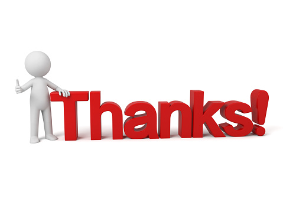

Congrats if you could find this page! I made it hard on purpose, but if needed, here are some references you may find useful when reading this website. Or you can visit the links below after!
Thanks for reading!
- William Vongphanith
